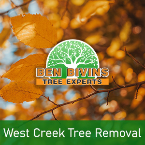
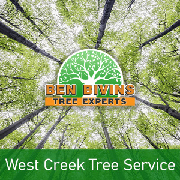

If you are in search of tree removal in West Creek or tree service in West Creek, Ben Bivins has you covered. Ben Bivins Tree Service has been providing top-notch tree services to West Creek for years.
Facts About West Creek Tree Removal

Have you got dead or unappealing trees which should be removed? Tree removal is usually a dangerous job that will require the correct equipment, machinery and basic safety protocols. Although it might be appealing to eliminate a tree yourself from your West Creek residence, it could be a choice that puts yourself or other people at risk, without having the proper know-how. There can be numerous reasons why you are thinking about a tree removal in West Creek:- Tree is hindering too much natural light on your property
- Tree is dead or unhealthy as well as a potential safety hazard
- Tree is too big and presents a danger if significant branches fall
- Tree was harmed in a storm and is beyond the point of saving
- You are considering remodeling that will inevitably damage the tree
- Tree is dropping too many branches, leaves, or pine needles
We are a fully insured and licensed tree company. Don’t assume the risk of using an uninsured tree removal company or relying on a friend to perform this type of work. Our crew is expertly educated and our business carries the proper credentials to ensure your West Creek tree removal will be executed in the safest and most effective possible way. Tree removal necessitates the use of serious machinery and dangerous equipment which should only be left to the pros. Leave it to the experts! Give us a call for a quote on your West Creek tree removal.
Looking for Tree Service in West Creek NJ?

We carry out all aspects of West Creek tree service. A few of these services include:- Tree Trimming – Is a tree in your yard overgrown? Is your lawn in short supply of sunlight due to an overgrown tree? Trimming a tree’s branches can make a big difference and may allow you to keep a tree you otherwise considered eliminating.
- Pruning – Keep your trees happy and healthy. Pruning consists of assessing a tree’s health and making a decision to remove limbs selectively to boost its health and longevity.
- Crown Reduction – We can decrease the size of your tree’s cover with this process. Our team will evaluate your tree and make recommendations to eliminate certain branches that will scale back canopy cover.
- Emergency Tree Service – Do you have a fallen tree that requires speedy attention? Is there a tree which is on the verge of causing damage if not attended to promptly? You might be a prospect for emergency tree service.
If you’re a West Creek resident looking for tree service, Call. Scheduling varies depending on weather, season and our current workload. We will provide you with a quote and let you know date ranges available for service after assessing your specific job.
Your Provider for West Creek Firewood
It’s not surprising that a West Creek tree removal business might have a surplus of firewood! If you are seeking firewood for a wood burning stove or fireplace, contact us. Firewood supply availability can vary throughout the year.